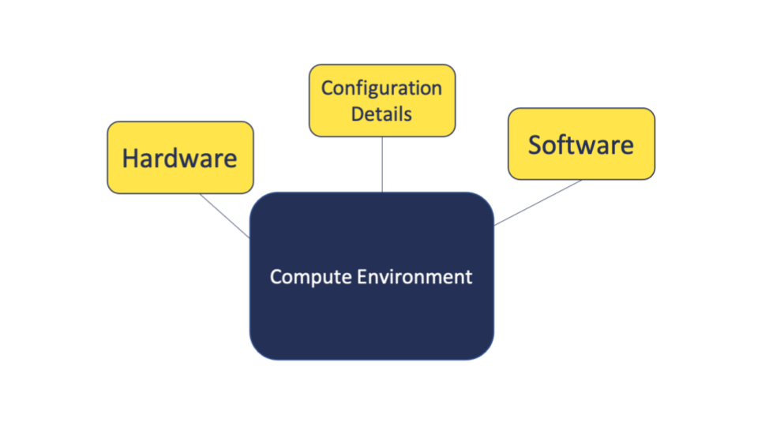

Terminology - Compute Environment
UM Bioinformatics Core
In this module, we will:
- discuss the idea of the “compute environment” and some related terms
Components of the Compute Environment


LS0tCnRpdGxlOiAiVGVybWlub2xvZ3kgLSBDb21wdXRlIEVudmlyb25tZW50IgphdXRob3I6ICJVTSBCaW9pbmZvcm1hdGljcyBDb3JlIgpvdXRwdXQ6CiAgICAgICAgaHRtbF9kb2N1bWVudDoKICAgICAgICAgICAgaW5jbHVkZXM6CiAgICAgICAgICAgICAgICBpbl9oZWFkZXI6IGhlYWRlci5odG1sCiAgICAgICAgICAgIHRoZW1lOiBwYXBlcgogICAgICAgICAgICBudW1iZXJfc2VjdGlvbnM6IGZhbHNlCiAgICAgICAgICAgIGZpZ19jYXB0aW9uOiB0cnVlCiAgICAgICAgICAgIG1hcmtkb3duOiBHRk0KICAgICAgICAgICAgY29kZV9kb3dubG9hZDogdHJ1ZQotLS0KPHN0eWxlIHR5cGU9InRleHQvY3NzIj4KYm9keXsgLyogTm9ybWFsICAqLwogICAgICBmb250LXNpemU6IDE0cHQ7CiAgfQpwcmUgewogIGZvbnQtc2l6ZTogMTJwdAp9Cjwvc3R5bGU+CgpJbiB0aGlzIG1vZHVsZSwgd2Ugd2lsbDoKCiogZGlzY3VzcyB0aGUgaWRlYSBvZiB0aGUgImNvbXB1dGUgZW52aXJvbm1lbnQiIGFuZCBzb21lIHJlbGF0ZWQgdGVybXMKCjxicj4KCiMjIENvbXBvbmVudHMgb2YgdGhlIENvbXB1dGUgRW52aXJvbm1lbnQKCiFbXShpbWFnZXMvTW9kdWxlVENFX2NvbXB1dGVfZW52X2J1aWxkaW5nX2Jsb2Nrcy5wbmcpCgo8YnI+Cjxicj4KPGJyPgo8YnI+CgohW10oaW1hZ2VzL01vZHVsZVRDRV9raXRjaGVuLnBuZykKCjxicj4KCiMjIyBSZWxhdGVkIFRlcm1pbm9sb2d5IGFuZCBDb25jZXB0cwoKPGJyPgoKKipWaXJ0dWFsIEVudmlyb25tZW50OioqICAKQW4gaXNvbGF0ZWQgc3BhY2Ugd2l0aGluIGEgY29tcHV0ZSBlbnZpcm9ubWVudCB3aGVyZSBjZXJ0YWluIGNvbXBvbmVudHMgLSBlLmcuIHNvZnR3YXJlIGFuZCBjb25maWd1cmF0aW9uIGRldGFpbHMgLSBjYW4gYmUgdXNlZCBpbmRlcGVuZGVudGx5IHdpdGhvdXQgaW50ZXJmZXJlbmNlIGZyb20gc3lzdGVtLXdpZGUgY29tcG9uZW50cyBvciBvdGhlciBwcm9qZWN0cyAgCkNvbW1vbmx5IHVzZWQgaW4gc29mdHdhcmUgZGV2ZWxvcG1lbnQgYW5kIGRhdGEgYW5hbHlzaXMgdG8gYXZvaWQgY29uZmxpY3RzIGJldHdlZW4gZGlmZmVyZW50IHByb2plY3RzICAKS2l0Y2hlbiBtZXRhcGhvcjogbGlrZSBhIHNlcGFyYXRlIGNsZWFuIHdvcmtzcGFjZSB3aXRoaW4geW91ciBraXRjaGVuIGZvciBzcGVjaWZpYyB0YXNrcyAtIGUuZy4gY2xlYW4gYXJlYSBmb3IgY2hvcHBpbmcgdmVnZXRhYmxlcyAgCioqRW52aXJvbm1lbnQgVmFyaWFibGU6KiogIApJbmZvcm1hdGlvbiB0aGF0IGlzIHVzZWQgYnkgYSBjb21wdXRlcidzIG9wZXJhdGluZyBzeXN0ZW0gdGhhdCBjYW4gaW5mbHVlbmNlIHRoZSB3YXkgdGhhdCBwcm9jZXNzZXMgYmVoYXZlICAKQ29tbW9ubHkgdXNlZCB0byBzdG9yZSBpbmZvcm1hdGlvbiBsaWtlIGZpbGUgcGF0aHMsIHVzZXJuYW1lcywgc3lzdGVtIHNldHRpbmdzLCBldGMuICAKS2l0Y2hlbiBtZXRhcGhvcjogbGlrZSBhIG5vdGUgb24gdGhlIHJlZnJpZ2VyYXRvciB0aGF0IHN0YXRlcyB3aGVyZSBkaWZmZXJlbnQgc3BpY2VzIGFyZSBsb2NhdGVkICAKCjxicj4KCnwgW1ByZXZpb3VzIGxlc3Nvbl0oTW9kdWxlX2RhdGFfcHJpb3JpdGllc19hbmFseXNpc19zZXR1cC5odG1sKSB8IFtUb3Agb2YgdGhpcyBsZXNzb25dKCN0b3ApIHwgW05leHQgbGVzc29uXShNb2R1bGVfc3RvcmFnZV9iZXN0X3ByYWN0aWNlc19VTVJDUC5odG1sKSB8CnwgOi0tLSB8IDotLS0tOiB8IC0tLTogfA==